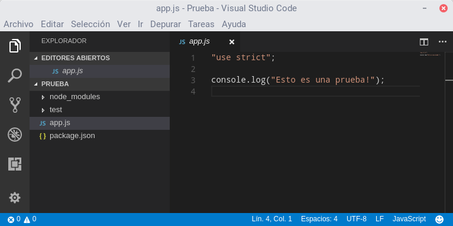
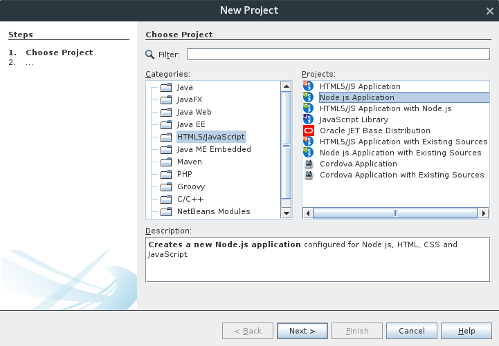
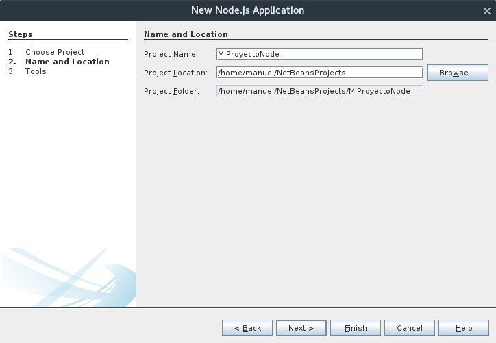
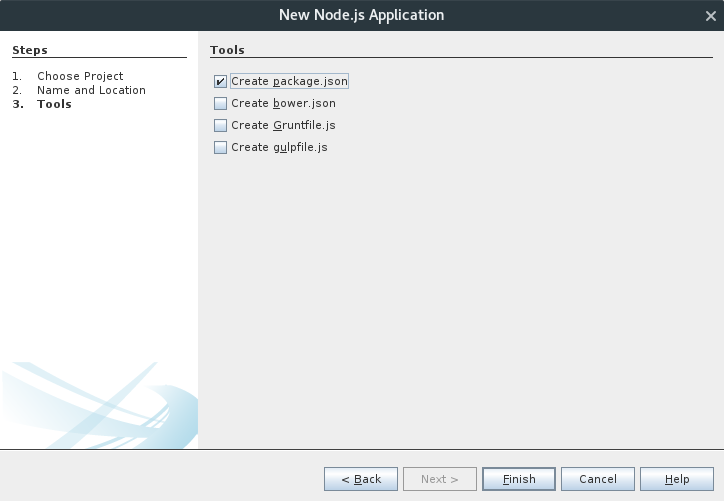
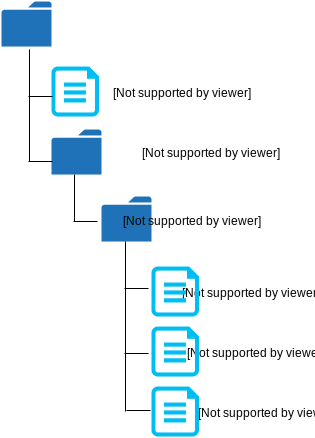
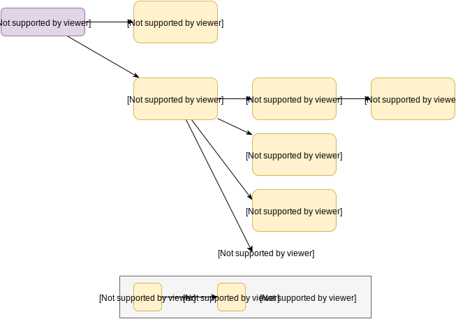
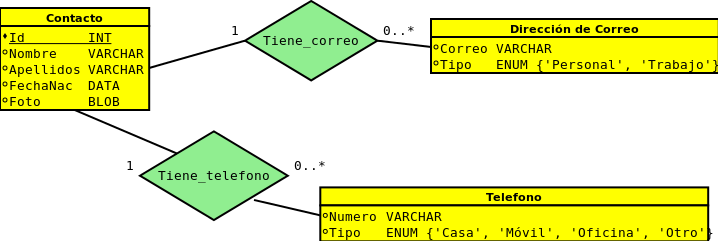
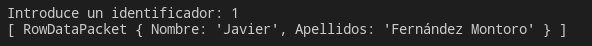
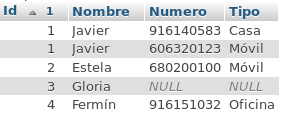
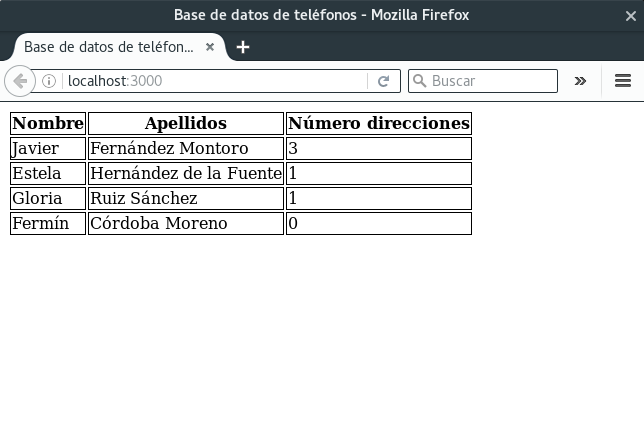

Javascript en el servidor: Node.js

Introducción
Node.js (o simplemente Node) es un entorno de ejecución que permite ejecutar Javascript fuera del navegador.
Se distribuye bajo una licencia MIT.
Principalmente dirigido a servidores web, pero puede utilizarse para implementar cualquier tipo de aplicación.
En este curso utilizaremos Node para implementar la funcionalidad del lado del servidor en las aplicaciones web.
Versiones
- v6.11.4 LTS, que utilizaremos en este curso.
- v8.7.0, que es la versión más reciente.
LTS = Long Term Support
Las versiones LTS tienen suporte garantizado durante 18 meses a partir del momento en el que se convierten en LTS.
Las versiones 8.x.x rompen la compatibilidad con las 6.x.x. Algunos programas escritos en Node 6 pueden requerir modificaciones para ejecutarse bajo Node 8.
Instalación
Puede descargarse desde:
https://nodejs.org/en/download/releases/
- Las versiones para Windows y Mac incluyen un instalador.
- Desde GNU/Linux se puede:
- Utilizar el gestor de paquetes de la distribución.
- Utilizar nvm (http://nvm.sh), que permite mantener varias versiones de Node en un mismo sistema.
- Descargar los binarios desde la URL anterior.
Ejecución de un script
Basta con teclear:
# node nombre_script.js
Si se desea ejecutar el intérprete (REPL):
# node
REPL = Read-Eval-Print Loop
El intérprete permite evaluar las expresiones Node que se introduzcan por teclado.
Ejemplo de sesión con el intérprete
# node
> 5 + 6
11
> let x = 4 + 5
undefined
> console.log("Hola");
Hola
undefined
> x
9
> function suma(x,y) {
..... return x + y;
..... }
undefined
> suma(4, 5)
9
> .exit
Comandos del intérprete
-
.exit
Sale del intérprete. -
.load script.js
Ejecuta las sentencias del fichero dado. -
.save script.js
Guarda todas las expresiones evaluadas en un fichero. -
.break
Cancelar introducción de expresión actual. Útil cuando se queda algún paréntesis abierto en la entrada.
Proyectos Node
El uso del ejecutable node para proyectos grandes resulta algo tediosa, porque estos requieren, entre otras cosas:
- Gestión de dependencias (librerías externas).
- Arranque y parada del sistema.
Herramientas para gestionar proyectos
- Desde la línea de comandos:
npm. - Desde un IDE: Netbeans.
NPM (Node Package Manager)
Es una herramienta que se incluye con la distribución de Node. Permite:
- Crear proyectos vacíos.
- Gestionar las librerías de las que hace uso un proyecto, consultando una base de datos pública (NPM Registry) que indica desde dónde descargarlas.
- Gestionar scripts: arranque del sistema, parada, ejecución de tests, etc.
Más información: https://www.npmjs.com/
Creación de un proyecto con npm
Ejecutar desde la línea de comandos:
# npm init
Se solicitará información sobre los datos del proyecto:
...
name: (project-test) miproyecto
version: (1.0.0) ↲ (Pulsar intro)
description: Esto es un proyecto de prueba
entry point: (index.js) app.js
test command: ↲
git repository: ↲
keywords: node proyecto aw prueba
author: Manuel Montenegro
license: (ISC) MIT
About to write to /home/manuel/Docencia/AW/Pruebas/project-test
/package.json:
...
Is this ok? (yes) yes
Se creará un fichero package.json con el siguiente contenido:
{
"name": "miproyecto",
"version": "1.0.0",
"description": "Esto es un proyecto de prueba",
"main": "app.js",
"scripts": {
"test": "echo \"Error: no test specified\" && exit 1"
},
"keywords": [
"node",
"proyecto",
"aw",
"prueba"
],
"author": "Manuel Montenegro",
"license": "MIT"
}
-
Atributo
scripts: permite añadir comandos para arrancar el programa, detenerlo, etc.
Por ejemplo, podemos añadir:
para poder arrancar el sistema mediante... "scripts": { "test": "mocha", "start": "node app.js" }, ...
o ejecutar los test mediante# npm start# npm test
Si no se introduce un nombre para repositorio Git, es posible declarar el paquete como privado añadiendo:
{
...
"author": "Manuel Montenegro",
"license": "MIT",
"private": true
}
De este modo evitaremos warnings sobre la ausencia de un repositorio.
Uso de Visual Studio Code
Es un IDE multiplataforma con licencia GPL.
Incorpora herramientas para la edición de código en Javascript y la gestión de proyectos en Node.
VS Code se apoya en npm para gestionar los proyectos Node.
Basta con abrir la carpeta donde se encuentre el fichero package.json de nuestro proyecto Node.
Archivo → Abrir carpeta... (Ctrl+K Ctrl+O)
Podemos ejecutar el proyecto y los tests mediante la opción Tareas → Ejecutar tarea, o bien introduciendo en la paleta de comandos (Ctrl+Shift+P) la orden task seguida del nombre de la tarea a ejecutar:
VS Code incluye un depurador de Javascript.
Introducimos puntos de ruptura utilizando el margen izquierdo del editor.

Después utilizamos la opción del menú Depurar → Iniciar depuración (F5)
Uso de Netbeans
Netbeans dispone un plugin para Node.
Se requiere Netbeans 8.1 o versión posterior.
Al descargarlo de la página web https://netbeans.org es necesario seleccionar la versión HTML5/Javascript o All.
Configuración de Netbeans
Para utilizar el plugin de Netbeans es necesario indicar el directorio de los ejecutables de Node, NPM, etc.
Menú Tools → Options → Pestaña HTML/JS → Pestaña Node
Crear un proyecto en Netbeans
File → New Project...
Seleccionar categoría HTML5/Javascript y tipo de aplicación Node.js application.
Especificar nombre de proyecto y pulsar Next >
Aceptar opciones por defecto y pulsar Finish
Módulos en Node
Existen tres tipos de módulos:
- Módulos fichero.
Forman parte de un proyecto, pero no están pensados para ser reutilizados como librerías. - Módulos core.
Vienen incluidos con Node. Proporcionan operaciones básicas (ficheros, servidores web, sistema operativo, etc.). - Módulos paquete.
Librerías externas, gestionadas por npm.
Crear un módulo fichero con una única función
Se crea un fichero Javascript con la función a definir y ésta se asigna a la variable module.exports:
function fibAux(n) {
if (n === 0) {
return 0;
} else if (n === 1) {
return 1;
} else {
return fib(n-1) + fib(n-2);
}
}
function fib(n) {
console.assert(typeof(n) === "number", `${n} is not a number`);
return fibAux(n);
}
module.exports = fib;
Suponemos que el código anterior está contenido en un fichero moduloFib.js.
Ahora hacemos uso de la función fib desde otro fichero:
// testModules.js
// --------------
const fib = require("./moduloFib.js");
console.log(fib(10));
Imprime:
55
La llamada a require(modulo):
- Ejecuta el fichero
modulopasado como parámetro. - Devuelve el objeto asignado a
module.exports(en este caso, la funciónfib)
El objeto devuelto por require se guarda en una variable que no ha de coincidir necesariamente con el nombre de la función exportada.
const myFib = require("./moduloFib.js");
console.log(myFib(10));
Esto es útil para prevenir conflictos de nombres entre los distintos módulos. Supongamos otro módulo otroModuloFib.js que también exporta una función fib:
const myFib = require("./moduloFib.js");
const otroFib = require("./otroModuloFib.js");
console.log(myFib(10));
console.log(otroFib(10));
Exportar más de una función
Hasta ahora hemos asignado una función a la variable module.exports.
Pero puede asignarse cualquier otro tipo de valor: enteros, arrays, objetos, etc.
Lo más frecuente es que un módulo quiera exportar varias funciones. Para ello se exporta un único objeto que contenga todas las funciones a exportar.
Ejemplo: geometria.js
function areaCuadrado(lado) {
return lado * lado;
}
function areaCirculo(radio) {
return Math.PI * radio * radio;
}
function perimetroCuadrado(lado) {
return 4 * lado;
}
function perimetroCirculo(radio) {
return 2 * Math.PI * radio;
}
module.exports = {
areaCuadrado: areaCuadrado,
areaCirculo: areaCirculo,
perimetroCuadrado: perimetroCuadrado,
perimetroCirculo: perimetroCirculo
}
...
module.exports = {
areaCuadrado: areaCuadrado,
areaCirculo: areaCirculo,
perimetroCuadrado: perimetroCuadrado,
perimetroCirculo: perimetroCirculo
}
El objeto exportado contiene cuatro atributos, cada uno asociado a su función correspondiente.
Los nombres de estos atributos serán los que se utilicen cuando se haga uso de este módulo.
Ejemplo de uso:
const geometria = require("./geometria.js");
console.log(geometria.areaCuadrado(10));
console.log(geometria.areaCirculo(10));
De nuevo, el nombre de la variable devuelta por el require puede ser cualquiera:
const g = require("./geometria.js");
console.log(g.areaCuadrado(10));
console.log(g.areaCirculo(10));
Aunque por convenio suele utilizarse el nombre del módulo (es decir, geometria)
Otra posible forma de definir un módulo: definir directamente las funciones en el objeto asignado a module.exports.
module.exports = {
areaCuadrado: function(lado) {
return lado * lado;
},
areaCirculo: function(radio) {
return Math.PI * radio * radio;
},
perimetroCuadrado: function(lado) {
return 4 * lado;
},
perimetroCirculo: function(radio) {
return 2 * Math.PI * radio;
}
}
Lo que no se exporte dentro de un módulo se considera privado al mismo. Esto nos permite modificar la implementación sin alterar la interfaz.
// moduloFib.js
// ------------
const PHI = (1 + Math.sqrt(5)) / 2;
// Cambio la función fibAux por esta:
function fibMasEficiente(n) {
const p1 = Math.pow(PHI, n);
const p2 = Math.pow(1 - PHI, n);
return Math.round((p1 - p2) / Math.sqrt(5));
}
function fib(n) {
console.assert(typeof(n) === "number",
`fib: ${n} is not a number`);
return fibMasEficiente(n);
}
module.exports = fib;
Importante
A la hora de importar un módulo de tipo fichero mediante require, es necesario indicar el path del fichero que se importa, aunque se encuentre en el mismo directorio.
// Correcto:
const geometria = require("./geometria.js");
// Correcto:
const geometria = require("./aw/librerias/geometria.js");
// Correcto:
const geometria = require("../geometria.js");
// Incorrecto:
const geometria = require("geometria.js");
No obstante, puede omitirse la extensión .js
// Correcto:
const geometria = require("./geometria");
// Incorrecto:
const geometria = require("geometria.js");
Si no se especifica un path Node entiende que se quiere importar un módulo de otro tipo:
- Módulo core.
- Módulo de tipo paquete.
Módulos Core
Forman parte de la distribución de Node.
También se importan mediante require, pero sin indicar un path relativo.
const os = require("os");
console.log(`Nombre del host: ${os.hostname()}`);
console.log(`Directorio personal: ${os.homedir()}`);
const util = require("util");
const mensaje = util.format("Tienes %d años", 45);
Nombres de módulos core: os, fs, path, http, util, etc.
Módulos de tipo paquete
Son módulos pensados para ser reutilizados e incorporados a otros proyectos.
Se instalan dentro la propia carpeta del proyecto, en una subcarpeta llamada node_modules.
La información de la mayoría de ellos se encuentra en una base de datos pública: NPM Registry.
Se importan con require y, al igual que los módulos core, no se indica el path relativo.
Búsqueda de un módulo de tipo paquete
const foo = require("foo");
Se busca foo en los siguientes directorios:
node_modules/foo.js../node_modules/foo.js../../node_modules/foo.js../../../node_modules/foo.js- y así sucesivamente, hasta llegar al directorio raíz
Por ejemplo, supongamos que en el fichero /home/manuel/aw/ejemplo.js
buscamos el siguiente paquete:
const mimodulo = require("mimodulo");
Se buscará en los siguientes directorios:
/home/manuel/aw/node_modules/mimodulo.js/home/manuel/node_modules/mimodulo.js/home/node_modules/mimodulo.js/node_modules/mimodulo.js
Paquetes con varios módulos
Un paquete puede contener más de un fichero .js
En este caso han de agruparse todos los .js en la misma carpeta, y guardar en esta carpeta un módulo index.js que exporte las funciones necesarias de cada uno de los módulos del paquete.
Para importar este paquete mediante require se debe indicar el nombre de la carpeta.
Partimos de esta estructura de directorios:

fib.js
"use strict";
function fib(n) { ... }
module.exports = fib;
fact.js
"use strict";
function fact(n) { ... }
module.exports = fact;
index.js
"use strict";
module.exports = {
fib: require("./fib"),
fact: require("./fact")
}
ejemplo.js
"use strict";
const math = require("math");
console.log(`fib(6) = ${math.fib(6)}`);
console.log(`fact(6) = ${math.fact(6)}`); Resultado:
$ node ejemplo.js
fib(6) = 8
fact(6) = 720
Árbol de dependencias
A menudo, la implementación de un proyecto Node requiere la instalación de unos determinados paquetes.
Cada uno de estos últimos pueden requerir la instalación de otros paquetes que, a su vez, requieren de otros paquetes.
Cuando la presencia del paquete X es un requisito para el funcionamiento del paquete Y, decimos que Y depende de X.
La relación de dependencia entre paquetes es transitiva, de modo que se tiene un árbol de dependencias.
Ejemplo
Instalar dependencias con npm
La herramienta npm permite gestionar las dependencias de un proyecto. De hecho, npm fue inicialmente concebido como un instalador de paquetes.
Esta herramienta puede descargar paquetes desde un repositorio, e incorporarlos en nuestro proyecto. https://www.npmjs.com/
Para descargar e instalar un paquete en un proyecto, ejecutar lo siguiente desde el directorio raíz del proyecto:
# npm install nombre_paquete
Por ejemplo, para incorporar el paquete underscore en nuestro proyecto:
# npm install underscore
Descargará la versión más reciente del paquete y la instalará bajo la carpeta node_modules del proyecto (creándola si es necesario)
El comando npm install no solo instala el paquete especificado, sino también sus dependencias.
Por ejemplo al instalar express:
# npm install express
Se instala el paquete express y todo su árbol de dependencias bajo la carpeta node_modules:
node_modules
├── express
├── accepts
├── array-flatten
├── content-disposition
├── content-type
├── cookie
...
Incluir dependencias en package.json
Podemos (y es recomendable) especificar las dependencias de un proyecto en su fichero package.json mediante la propiedad dependencies:
{
"name": "mi_proyecto",
"version": "1.0.0",
"description": "Prueba de uso de paquetes",
"main": "main.js",
"scripts": {
"test": "echo \"Error: no test specified\" && exit 1"
},
"author": "Manuel Montenegro",
"license": "ISC",
"dependencies": {
"underscore": "^1.8.3",
"express": "^4.14.0"
},
"private": true
}
Por defecto, npm no modifica el fichero package.json tras añadir un paquete a nuestro proyecto.
No obstante, al instalar un paquete podemos indicar a npm que añada la dependencia correspondiente a package.json. Esto se hace mediante la opción --save.
# npm install underscore --save
# npm install express --save
Instalación global de paquetes
A veces un paquete incorpora ficheros ejecutables diseñados para su uso en cualquier proyecto del sistema (mocha, nodemon, grunt, jshint, etc.)
Para poder ser invocados desde cualquier proyecto, estos ejeutables han de instalarse de manera global.
La instalación de un paquete de forma global puede requerir permisos de administrador en el sistema.
Para instalar un paquete de manera global se ha de especificar la opción -g a npm.
Por ejemplo:
# npm install -g jshint
Además del paquete correspondiente, instalará el ejecutable jshint en la carpeta ${prefix}/bin.
Distribución de un proyecto
Cuando se quiere distribuir un proyecto o publicar en un repositorio (p.ej. GitHub), no es necesario incluir el directorio
node_modules con las dependencias.
Basta con indicar las dependencias en el package.json, y distribuir este último junto con el proyecto.
Mediante el comando:
# npm install
se reconstruirá la carpeta node_modules a partir de la información contenida en package.json, descargando los paquetes que sean necesarios.
Otras opciones de npm
-
npm ls
Muestra el árbol de dependencias del proyecto actual. -
npm search term
Busca los paquetes del repositorio node cuyo nombre contengaterm. -
npm update nombre_paquete
Actualiza un paquete a la útima versión disponible. -
npm dedupe
Reorganiza la carpetanode_modulespara evitar duplicidades. -
npm publish
Sube los datos del proyecto actual en el NPM Registry.
Ejemplo: listar árbol de dependencias
# npm ls
mimodulo@1.0.0
├─┬ express@4.14.0
│ ├─┬ accepts@1.3.3
│ │ ├─┬ mime-types@2.1.12
│ │ │ └── mime-db@1.24.0
│ │ └── negotiator@0.6.1
│ ├── array-flatten@1.1.1
│ ├── content-disposition@0.5.1
│ ├── content-type@1.0.2
│ ├── cookie@0.3.1
│ ├── cookie-signature@1.0.6
│ ├─┬ debug@2.2.0
│ │ └── ms@0.7.1
│ ├── depd@1.1.0
│ ├── encodeurl@1.0.1
│ ├── escape-html@1.0.3
│ ...
└── underscore@1.8.3
Modelo asíncrono
Node utiliza un modelo de entradas y salidas asíncronas con el fin de permitir el desarrollo de aplicaciones altamente concurrentes.
Este modelo resulta muy útil en un contexto de aplicaciones web, donde un servidor web ha de procesar miles de peticiones por segundo.
Modelos síncrono vs asíncrono
Cuando ejecutamos una operación síncrona, la ejecución del programa se detiene hasta que dicha operación haya terminado.
Ej: Lectura de fichero síncrona
Cuando ejecutamos una operación asíncrona, la ejecución del programa continúa, mientras la operación se realiza de manera «concurrente».
Ej: Lectura de fichero asíncrona
«concurrente»
En realidad, en Node solo hay un hilo en ejecución.
Más información en el Tema 6 y en: http://nodesource.com/blog/understanding-the-nodejs-event-loop/
No obstante, para este curso supongamos que realmente existe concurrencia en las funciones asíncronas.
Un ejemplo: lectura de fichero
El módulo core fs proporciona operaciones para manejar ficheros. Dentro de este módulo hay dos funciones para leer el contenido de un fichero:
readFileSync(fichero, opcs)
Lectura síncrona.readFile(fichero, opcs, callback)
Lectura asíncrona.
Lectura síncrona
"use strict";
const fs = require("fs");
try {
const contenido = fs.readFileSync("FichTexto.txt",
{ encoding: "utf-8" });
console.log("Fichero leído correctamente:");
console.log(contenido);
} catch (err) {
console.log("Se ha producido un error:");
console.log(err.message);
}
Las operaciones síncronas:
- Bloquean la ejecución del programa mientras se realizan.
- Devuelven el resultado de la operación.
- En caso de error, lanzan excepciones.
Lectura asíncrona
Si la operación de lectura asíncrona se realiza de manera ajena al hilo de ejecución principal del programa, ¿cómo sabemos cuándo ha finalizado?
Mediante el uso de funciones callback.
Funciones callback
Una función callback es una función definida por el programador, pero que no está pensada para ser llamada directamente por este, sino por otro componente del sistema.
Funciones callback: readFile
La función asíncrona readFile (módulo fs), además de recibir el nombre del fichero y las opciones de lectura, recibe un tercer parámetro, que es una función.
Esta función es definida por el programador, pero será llamada por readFile cuando la lectura del fichero haya finalizado.
Es, por tanto, una función callback.
A su vez, la función callback recibe dos parámetros:
- Un objeto de la clase
Error, en el caso en que la lectura haya fallado.
Si no ha fallado, toma el valornull. - El contenido del fichero leído, en el caso en que se haya leído correctamente.
Si ha fallado, toma el valorundefined.
"use strict";
const fs = require("fs");
fs.readFile("FichTexto.txt", { encoding:"utf-8" }, ficheroLeido);
// Función callback
function ficheroLeido(err, contenido) {
if (err) {
console.log("Se ha producido un error:");
console.log(err.message);
} else {
console.log("Fichero leído correctamente:");
console.log(contenido);
}
}
Tras la lectura, readFile llamará a la función ficheroLeido.
Las funciones callback suelen definirse directamente como funciones anónimas en la llamada a readFile.
"use strict";
const fs = require("fs");
fs.readFile("FichTexto.txt",
{ encoding: "utf-8" },
(err, contenido) => {
if (err) {
console.log("Se ha producido un error:");
console.log(err.message);
} else {
console.log("Fichero leído correctamente:");
console.log(contenido);
}
}
);
Las operaciones de lectura asíncrona:
- No bloquean la ejecución del programa.
Porque se ejecutan de manera concurrente. - No devuelven ningún valor.
El resultado de la lectura se pasa como parámetro a la función callback. - No lanzan excepciones.
En caso de error, es la función callback quien recibe la excepción como primer parámetro.
Un error frecuente
¡Cuidado con el siguiente código!
let contenidoFichero;
fs.readFile("FichTexto.txt",
{ encoding: "utf-8" },
(err, contenido) => {
if (!err) {
// Asignamos el contenido a la variable
// externa
contenidoFichero = contenido;
}
});
console.log(contenidoFichero); // ¿Qué se imprime aquí?
En el mejor de los casos, la llamada a console.log se ejecutaría después de que la lectura haya finalizado.
Pero esto no ocurre así nunca.
console.log se ejecuta antes de que la lectura termine:
En este caso se imprime undefined, ya que contenidoFichero no ha sido inicializada en el momento de ejecutar console.log.
Moraleja
Si un fragmento del programa depende del resultado de una llamada asíncrona, no debe ir tras dicha llamada:
fs.readFile("fich.txt", (err, contenido) => {
...
});
// hacer algo con el contenido
fs.readFile("fich.txt", (err, contenido) => {
// hacer algo con el contenido
...
});
Módulos core
- Variables y funciones predefinidas
- Nombres de ficheros: módulo
path - Manejo de ficheros: módulo
fs
Variables predefinidas
Las siguientes variables son accesibles desde cualquier módulo o script, pero no desde la shell de Node:
__filename: Fichero .js que se está ejecutando (incl. directorio).__dirname: Directorio en el que se encuentra el fichero que se está ejecutando.
// globals.js
// ----------
console.log(__dirname);
// → /home/manuel/AW/core-modules/
console.log(__filename);
// → /home/manuel/AW/core-modules/globals.js
Módulo path
Contiene funciones de utilidad para trabajar con nombres de ficheros de manera independiente del SO.
Funciones más importantes:
path.join(dir1, dir2, ...)Concatena varios directorios utilizando el separador del sistema operativo:/en sistemas UNIX (Linux),\en Windows.path.parse(filename)
Obtiene las distintas componentes (path, fichero, extensión, etc.)
const path = require("path");
const infoFichero = path.parse(__filename);
console.log(infoFichero);
// → { root: '/',
// dir: '/home/manuel/AW/core-modules',
// base: 'paths.js',
// ext: '.js',
// name: 'paths' }
const nuevoFichero = path.join(infoFichero.dir, "nuevo",
infoFichero.base);
console.log(nuevoFichero);
// → /home/manuel/AW/core-modules/nuevo/paths.js
Más información: https://nodejs.org/dist/latest-v6.x/docs/api/path.html
Módulo fs
Funciones relativas al sistema de ficheros.
-
readFile(fichero, options, callback)
Lectura asíncrona de un fichero.La función callback recibe como primer parámetro un objeto
Error(si se produce error) y como segundo parámetro el contenido del fichero. -
writeFile(fichero, datos, options, callback)
Escritura asíncrona de un fichero.La función callback recibe como primer parámetro un objeto
Error(si se produce error).
const fs = require("fs");
const texto = "Nadi puede ser dichoso,\n" +
"señora, ni desdichado,\n" +
"sino que os haya mirado";
fs.writeFile("Poema.txt", texto, {encoding: "utf-8"},
(err) => {
if (err) {
console.log("Error al escribir el fichero.");
} else {
console.log("Fichero escrito correctamente.");
fs.readFile("Poema.txt", {encoding: "utf-8"},
(err, contenido) => {
if (!err) {
console.log(contenido);
}
});
}
});
Si no se indica la opción encoding, estas funciones trabajan con objetos de tipo Buffer, en lugar de cadenas. Un buffer representa una secuencia de bytes.
Esto sirve para trabajar con ficheros binarios.
const fs = require("fs");
fs.readFile("thymeleaf.pdf", function(err, buffer) {
// Obtenemos los cuatro primeros bytes
const mark = buffer.slice(0, 4);
// Y los imprimimos con la codificación ASCII
console.log(mark.toString("ascii"));
});
Otras funciones de fs
- Leer y escribir de manera segmentada:
open,close,read,write. -
Manejo del sistema de ficheros:
mkdir,fstat,rename,unlink, etc.
Todas estas funciones son asíncronas.
Variantes síncronas
Son bloqueantes y (posiblemente) devuelven un resultado, en lugar de utilizar funciones callback.
readFileSync,writeFileSyncopenSync,closeSync,readSync,writeSync.mkdirSync,fstatSync,renameSync, etc.
Acceso a bases de datos
Paquetes para conexión a un SGBD:
- Bases de datos relacionales:
mysql: MySQL, MariaDB. Este temanode-oracledb: Oracle.sequelize: ORM para MySQL.
-
Bases de datos documentales:
mongodb: MongoDB (JSON)mongoose: ODM para MongoDBnode-exist: eXist-db (XML)basex: BaseX (XML)
Base de datos de ejemplo
Agenda de contactos
Tabla Contacto
Tabla Tiene_Telefono
Tabla Tiene_Correo
Ejercicio
Realizar una consulta SQL que muestre, para cada contacto, su nombre y apellidos, y el número de direcciones de correo electrónico asociadas al mismo.
Paquete mysql
Instalación mediante npm
npm install mysql --save
Pasos para acceder a la BD:
- Crear e inicializar un objeto
Connection. - Realizar la conexión.
- Realizar consulta o modificación.
- Cerrar la conexión.
Salvo la primera, todas las operaciones son asíncronas.
Inicializar una conexión
En el paquete mysql existe la función createConnection() y los métodos connect(), query() y close() para realizar estos pasos.
Pero nosotros no vamos a abrir y cerrar conexiones de manera individual.
En teoría, una aplicación web debería abrir y cerrar una conexión cada vez que atienda una petición que requiera acceso a la BD, pero la creación de conexiones es un proceso relativamente costoso.
Pool de conexiones
Un pool de conexiones es un contenedor de conexiones permanentemente abiertas a una determinada BD
Con un pool conseguimos que las conexiones se reutilicen en sucesivas consultas a la BD, sin necesidad de crear conexiones nuevas continuamente.
El paquete mysql permite la creación de pools:
const mysql = require("mysql");
const pool = mysql.createPool({
host: "localhost",
user: "root",
password: "",
database: "miBD"
});
//...
createPool() devuelve un objeto de la clase Pool.
Los objetos Pool permiten obtener conexiones mediante el método asíncrono getConnection().
Cuando se quiere realizar una consulta a la BD, se adquiere una conexión libre del pool de conexiones.
Cuando se ha terminado de trabajar con la conexión, se devuelve al pool, en lugar de cerrarla.
Obtener una conexión del pool
Método getConnection(callback)
pool.getConnection((err, connection) => {
if (err) {
console.log(`Error al obtener la conexión: ${err.message}`);
} else {
// ... realizar consulta ...
}
});
Con el objeto Connection podemos ejecutar consultas y modificaciones mediante SQL.
Ejecutar consultas
Método query(consulta, callback)
La función callback recibe, además del objeto error, el resultado de la consulta.
connection.query(
"SELECT Nombre, Apellidos, FechaNac, Foto FROM Contactos",
(err, filas) => {
if (!err) {
// Recorrer y procesar las filas
}
}
);
El resultado de una consulta es un array de objetos.
Cada objeto representa una fila. Los atributos de cada objeto son los nombres de las columnas devueltos por SELECT. Los valores asociados a cada atributo dependen del tipo de la columna correspondiente:
| Tipo Node | Tipo SQL |
|---|---|
number |
INT, SMALLINT, FLOAT, DOUBLE, ... |
string |
CHAR, VARCHAR, TEXT, ENUM, ... |
Date |
TIMESTAMP, DATE, DATETIME |
Buffer |
BLOB, BINARY, DATETIME, ... |
conexion.query(
"SELECT Nombre, Apellidos FROM Contactos",
function(err, filas) {
if (!err) {
filas.forEach(function(fila) {
console.log(`${fila.Nombre} ${fila.Apellidos}`);
});
// ...
}
}
);
Javier Fernández Montoro
Estela Hernández de la Fuente
Gloria Ruiz Sánchez
Fermín Córdoba Moreno
El pool contiene un número limitado de conexiones.
Por tanto, conviene devolver la conexión al pool, mediante el método release(), una vez obtenidos los resultados de la consulta.
conexion.query(
"SELECT Nombre, Apellidos FROM Contactos",
(err, filas) => {
if (!err) {
filas.forEach((fila) => {
console.log(`${fila.Nombre} ${fila.Apellidos}`);
});
conexion.release();
}
}
);
Inserciones, borrados y actualizaciones
Al igual que en las consultas, se utiliza query()
En estos casos, la función callback recibe un objeto con información sobre el resultado de la operación.
Atributos del objeto resultado:
affectedRows: número de filas insertadas, actualizadas o borradas.insertId: identificador de la última fila insertada, en caso de ser de tipoAUTO_INCREMENT.
Ejemplo
pool.getConnection((err, conexion) => {
if (err) { /* ... */ }
const sql = "INSERT INTO Contactos(Nombre, Apellidos) "
+ "VALUES ('Diana', 'Díaz')"
conexion.query(sql, function(err, resultado) {
if (err) {
console.log("Error de inserción: " + err);
} else {
// Imprime el identificador de la nueva fila
console.log(resultado.insertId);
// Imprime el número de filas insertadas
console.log(resultado.affectedRows);
// Devolvemos la conexión al pool
conexion.release();
}
});
});
Consultas SQL paramétricas
Supongamos que queremos realizar un programa que solicite un identificador al usuario y muestre la entrada de la tabla contactos con ese identificador.

// Suponemos que la variable `id` contiene el identificador
// introducido por el usuario
connection.query(
`SELECT Nombre, Apellidos FROM contactos WHERE Id = ${id}`,
(err, rows) => {
console.log(rows);
/* ... */
}
);
La variable id proviene de la entrada introducida por el usuario. Esta variable pasa directamente a la consulta SQL.
¿Qué pasa si el usuario hubiese introducido 4 OR TRUE?
Sentencia SQL ejecutada:
SELECT Nombre, Apellidos FROM contactos WHERE Id = 4 OR TRUE
Inyección SQL

Fuente: http://gizmodo.com/5498412/sql-injection-license-plate-hopes-to-foil-euro-traffic-cameras
Inyección SQL

Fuente: https://xkcd.com/327/
Una consulta paramétrica es una consulta SQL con «huecos» (denominados marcadores), representados mediante el símbolo ?.
Al rellenar los marcadores con valores concretos, estos se «escapean» de manera que se previenen los ataques de inyección SQL.
Ejemplo de consulta paramétrica:
INSERT INTO contactos(Nombre, Apellidos) VALUES (?, ?);
El método query() puede recibir una consulta paramétrica. En este caso, el segundo parámetro de este método recibe un array con los valores asignados a los marcadores.
Por ejemplo, si se ejecuta la consulta paramétrica,
SELECT Nombre, Apellidos FROM contactos
WHERE Id = ?
y asignamos la cadena "1 OR TRUE" al marcador, en realidad se ejecutará la siguiente consulta:
SELECT Nombre, Apellidos FROM contactos
WHERE Id = '1 OR TRUE'
Función query con consultas paramétricas:
query(consulta, valores_marcadores, callback)
// Suponemos que la variable `id` contiene el identificador
// introducido por el usuario
connection.query(
`SELECT Nombre, Apellidos FROM contactos WHERE Id = ?`,
[id],
(err, rows) => {
console.log(rows);
/* ... */
}
);
El problema de las n+1 consultas
Supongamos que queremos mostrar un listado de todos los contactos, cada uno de ellos con sus números de teléfono asociados.
Supongamos la siguente solución (pseudocódigo):
listaContactos := SELECT Id, Nombre FROM Contactos
for (c in listaContactos) {
print(c.Nombre);
listaTelefonos := SELECT Numero, Tipo FROM Tiene_Telefono
WHERE Id = c.Id
for (t in listaTelefonos) {
print(c.Numero, c.Tipo)
}
}
Si existen n contactos, ¿cuántas consultas se realizan?
- Una para obtener todos los contactos.
- Para cada uno de los
ncontactos, una consulta para obtener sus teléfonos.
Total: n+1 consultas.
El problema de las n+1 consultas se produce cuando se realiza un número de consultas proporcional al número de resultados recuperados de la BD.
Cada consulta conlleva un coste en tiempo.
Podemos obtener el mismo resultado mediante una única consulta, aunque sea más compleja.
filasConsulta := SELECT c.Id, c.Nombre, t.Numero, t.Tipo
FROM Contactos AS c
LEFT JOIN Tiene_Telefono AS t ON c.Id = t.Id
ORDER BY c.Id

IdContactoActual := null;
for (f in filasConsulta) {
if (f.Id ≠ IdContactoActual) {
print(f.Nombre)
IdContactoActual := f.Id;
}
if (f.Numero ≠ null) {
print(f.Numero)
}
}
Servidores web con Node
Recordemos el modelo cliente-servidor aplicado a la web:
El cliente es un navegador web.
El servidor es un programa que está escuchando en el puerto TCP 80.
Cuando el usuario introduce una URL en el cliente se envía una petición HTTP al servidor correspondiente.
Accept: text/html Cabeceras
...
El servidor analiza la petición y la responde.
En este caso, la respuesta sería:
Content-Type: text/html Cabeceras de la respuesta
...
<html lang="es"> Cuerpo de la respuesta
<head>
<title>...</title>
...
Referencias: peticiones HTTP, respuestas HTTP.
Implementaremos la funcionalidad del servidor.
En la fase de desarrollo de una aplicación web se suele utilizar otro puerto distinto del 80. Utilizaremos el puerto 3000.
Servidores web con Node
La creación de servidores requiere el uso de sockets.
Para ello, deberíamos:
- Crear un socket asociado al puerto 80 (o cualquier otro).
- Aceptar peticiones de clientes.
- Analizar sintácticamente la petición HTTP del cliente, que viene como cadena de texto.
- Generar una respuesta en formato HTTP.
Por suerte, hay un módulo que hace todo esto...
El módulo core http implementa un servidor web.
const http = require("http");
Los objetos de la clase Server representan servidores web, y son creados mediante la función createServer, que recibe una función callback:
const servidor = http.createServer((request, response) => {
...
});
La función callback es definida por el programador, y llamada por el módulo http cada vez que algún cliente realiza una petición HTTP.
http.createServer((request, response) => { /* ... */ });
El parámetro request de esta función callback contiene un objeto de la clase IncomingMessage, con atributos y métodos para acceder a cada componente de la petición: método, URL, cabeceras, etc.
El parámetro response (clase ServerResponse) contiene métodos y atributos que especifican la respuesta HTTP que se devolverá al cliente.
La función createServer tan solo sirve para establecer la función callback que procesa las peticiones, pero no inicia el servidor en ningún puerto.
Para iniciar el servidor debemos utilizar el método listen() del servidor recién creado, indicando el puerto en el que queremos escuchar y (opcionalmente) una función callback que será llamada cuando comience la escucha.
const servidor = http.createServer(function(request, response) {
// ...
});
servidor.listen(3000, (err) => {
if (err) {
console.log(`Error al abrir el puerto 3000: ${err}`);
} else {
console.log("Servidor escuchando en el puerto 3000.");
}
});
El objeto request
Atributos más importantes de request:
method: método HTTP utilizado (GET, POST, PUT, etc.).url: URL a la que se accede, excluyendo el nombre del servidor.headers: Objeto con las cabeceras de la petición.
Por ejemplo:
const servidor = http.createServer(function(request, response) {
console.log(`Método: ${request.method}`);
console.log(`URL: ${request.url}`);
console.log(request.headers);
});
Con el servidor arrancado, iniciamos el navegador e introducimos la siguiente dirección:
http://localhost:3000/index.html
Se imprime lo siguiente:
Método: GET
URL: /index.html
{ host: 'localhost:3000',
'user-agent': 'Mozilla/5.0 (X11; Fedora; Linux x86_64;rv:49.0)
Gecko/20100101 Firefox/49.0',
...
} El objeto response
Hasta ahora, cuando introducimos una URL en el navegador, éste se queda «colgado» esperando una respuesta del servidor. Utilizaremos el objeto response de la función callback para responder al servidor. Sus atributos y métodos más importantes son:
statusCode: indica el código de respuesta: 200, 404, etc.setHeader(clave, valor): añade una cabecera a la respuesta.write(str): envia la cadenastren el cuerpo de la respuesta.end([str]): delimita el final de la respuesta.
Ejemplo
const servidor = http.createServer(function(request, response) {
response.statusCode = 200;
response.setHeader("Content-Type", "text/html");
response.write('<!DOCTYPE html>');
response.write('<html>');
response.write('<head>');
response.write('<title>Página de prueba</title>');
response.write('<meta charset="utf-8">');
response.write('</head>');
response.write('<body></ul>');
for (let i = 0; i < 10; i++) {
response.write(`<li>Item ${i}</li>`);
}
response.write('</ul></body></html>');
response.end();
});
Al acceder a http://localhost:3000:
Otro ejemplo: acceso a una BD
Utilizando la base de datos vista anteriormente, queremos una página que devuelva, para cada usuario, su nombre, apellidos y el número de direcciones de correo asociadas.
Implementamos una función consultaBD, que realiza la consulta SQL correspondiente y pasa los resultados a la función callback pasada como parámetro:
const pool = ...
function consultaBD(callback) {
pool.getConnection(function(err, conexion) {
if (err) { callback(err); }
else {
conexion.query(
"SELECT Nombre, Apellidos, COUNT(tc.Correo) as NumCorreos " +
"FROM Contactos c LEFT JOIN Tiene_Correo tc ON c.Id = tc.Id " +
"GROUP BY c.id",
function(err, rows) {
conexion.release();
callback(null, rows);
});
}
});
}
Función callback del servidor:
const servidor = http.createServer(function(request, response) {
consultaBD(function(err, filasBD) {
if (err) {
response.statusCode = 500;
console.error(err);
} else {
response.statusCode = 200;
devolverPagina(response, filasBD);
}
});
});
La función devolverPagina es la que se encarga de generar el código HTML correspondiente:
function devolverPagina(response, filasBD) {
response.setHeader("Content-Type", "text/html");
response.write('<html>');
response.write('<head>');
response.write('<title>Base de datos de teléfonos</title>');
response.write('<meta charset="utf-8">');
response.write('<style>th, td { border: 1px solid }</style>');
response.write('</head>');
response.write('<body>');
response.write('<table>');
response.write('<tr><th>Nombre</th><th>Apellidos</th>' +
'<th>Número direcciones</th></tr>');
filasBD.forEach(function(fila) {
response.write('<tr>');
response.write(`<td>${fila.Nombre}</td>`);
response.write(`<td>${fila.Apellidos}</td>`);
response.write(`<td>${fila.NumCorreos}</td>`);
response.write('</tr>');
});
response.write('</table>');
response.write('</body>');
response.end();
}
Esquema general de un servidor
La función callback del servidor devuelve una respuesta en función de la petición recibida.
Una función callback típica tendría la siguiente forma:
const servidor = http.createServer(function(request, response) {
const method = request.method;
const url = request.url;
if (method === "GET" && url === "/index.html") {
// Servir página principal.
} else if (method === "GET" && url === "/index.css") {
// Servir hoja de estilo.
} else if (...) {
// ...
// ...
// ...
} else {
response.statusCode = 404;
}
});
¡Qué complicado! ¿no?
Esta función callback tendrá que lidiar con:
- Generación de páginas web complejas mediante
response.write(). - Procesamiento de formularios:
urlyquerystring. - Envío de ficheros al servidor.
- Manejo de cookies, sesiones, etc.
El módulo http es de demasiado bajo nivel para estas tareas. Es recomendable el uso de un framework que abstraiga los detalles técnicos.
Continuará...en el siguiente tema.
Bibliografía
- B.A. Syed
Beginning Node.js
Apress, 2014 - S. Powers
Learning Node, 2nd edition
O'Reilly (2016) -
Documentación de las librerías de Node
https://nodejs.org/dist/latest-v6.x/docs/api/